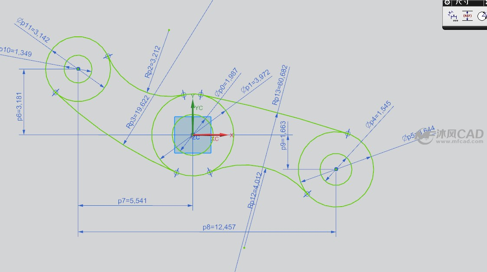
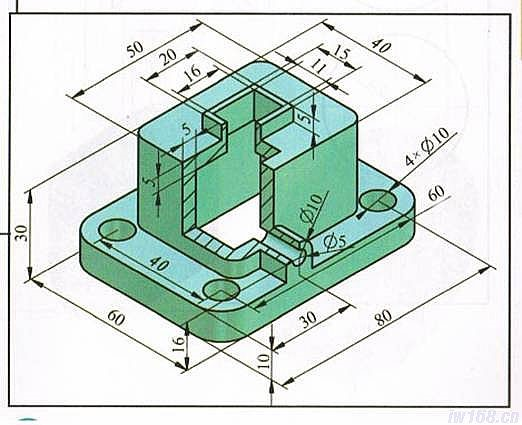
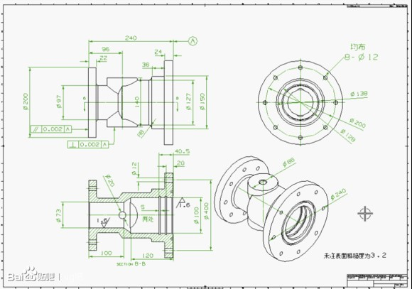

UG NX软件是美国EDS公司（现已经被西门子公司收购）开发的一套集CAD/CAM/CAE/PDM/PLM于一体的软件集成系统。 UG是当今最先进的计算机辅助设计、分析和制造软件，广泛应用于航空航天、汽车、造船、通用机械和电子等工业领域。UG提供了一个基于过程的产品设计环境，使产品开发从设计到加工真正实现了数据的无缝集成，从而优化了企业的产品设计与制造。
NX 包括了世界上最强大、最广泛的产品设计应用模块。NX 具有高性能的机械设计和制图功能，为制造设计提供了高性能和灵活性，以满足客户设计任何复杂产品的需要。 NX 优于通用的设计工具，具有专业的管路和线路设计系统、钣金模块、专用塑料件设计模块和其他行业设计所需的专业应用程序。
其CAD功能主要特点：
草图（Sketch）是与实体模型相关联的二维图形。该功能可以在需要的任和一个平面内建立草图平面，进而作出草图。所绘制的草图与Curve(基本曲线)功能中所绘制图形最大的不同是：草图中增加了“约束”的概念，通过修改“约束”就可以改变草图中的图形。应用草图工具，用户可以绘制近似的曲线轮廓，在添加精确的约束定义后，就可以完整表达设计的意图。建立的草图还可用实体造型工具进行拉伸、旋转等操作，生成与草图相关联的实体模型。修改草图时，关联的实体模型也会自动更新。
主要培训内容如下：
UG“建模”可帮助设计工程师快速进行概念设计和详细设计。它是一个基于实体建模的特征和约束，让用户可以以交互模式生成和编辑复杂的实体模型。设计工程师可以生成和编辑更逼真的模型，而花费的力气要比使用传统的基于线框和实体的系统少得多。
实体建模的优点：
建模提高了用户的表达式层次，这样就可以用工程特征来定义设计，而不是用低层次的CAD几何体。特征是以参数形式定义的，以便基于大小和位置进行尺寸驱动的编辑。
特征：
强大的面向工程的内置成型特征：槽、孔、凸台、圆台、腔体 - 可捕捉设计意图并提高效率。
特征引用的图案：矩形和圆周阵列，并有单个特征位移，图案中的所有特征都与主特征关联。
主要培训内容如下：
UG工程图
工程图是工程界的“技术交流语言”，在产品的研发、设计和制造等过程中，各类技术人员需要经常进行交流和沟通，工 程图则是经常使用的交流工具。尽管随着科学技术的发展， 3D设计技术有了很大的发展与进步，但是三维模型并不能将所有的设计信息表达清楚，有些信息例如尺寸公差、形位公差和表面粗糙度等，仍然需要借助二维的工程图将其表达清楚。因此工程图是产品设计中的较为重要的环节，也是设计人员最基本的能力要求。
利用UG NX的实体建模模块创建的零件和装配体主模型，可以引用到UG的工程图模块中，通过投影快速的生成二维工程图由于UG NX的工程图功能是基于创建三维实体模型的投影所得到的，因此工程图与三维实体模型是完全相关的，实体模型进行的任何编辑操作，都会在三维工程图中引起相应的变化。
UG NX的工程图功能可以在图纸中创建多个二维视图，还可以创建各种复杂的剖视图等，UG NX中的视图标注功能可自动标注在建立模型时已设置的尺寸特征、形位公差和其他符号标注。
主要培训内容如下：
UG装配过程是在装配中建立部件之间的链接关系。它是通过关联条件在部件间建立约束关系，进而来确定部件在产品中的位置，形成产品的整体机构。在UG装配过程，部件的几何体是被装配引用，而不是复制到装配中。因此无论在何处编辑部件和如何编辑部件，其装配部件保持关联性。如果某部件修改，则引用它的装配部件将自动更新。
UG装配模块不仅能快速组合零部件成为产品，而且在装配中，可参照其它部件进行部件关联设计，并可对装配模型进行间隙分析、重量管理等操作。装配模型生成后，可建立爆炸视图，并可将其引入到装配工程图中；同时，在装配工程图中可自动产生装配明细表，并能对轴测图进行局部挖切。
常用装配术语及定义
主要培训内容如下：
运动分析模块（Scenario For Motion）是CAE应用软件，用于建立运动机构模型，分析其运动规律。运动分析模块自动复制主模型的装配文件，并建立一系列不同的运动分析方案，每个运动分析方案均可独立修改，而不影响装配主模型，一旦完成优化设计方案后，可直接更新装配主模型以反映优化设计的结果。
运动分析模块可以进行机构的干涉分析，跟踪零件的运动轨迹，分析机构中零件的速度、加速度、作用力、反作用力和力矩等。运动分析模块的分析结果可以指导修改零件的结构设计（加长或缩短构件的力臂长度、修改凸轮型线、调整齿轮比等），或零件的材料(减轻或加重或增加硬度等)。设计更改可以反映在装配主模型的复制品分析方案（Scenario）中，再重新分析，一旦确定优化的设计方案，设计更改可直接反映到装配主模型中。
UG/Motion的功能:
运动仿真功能的实现步骤为：
主要培训内容如下：